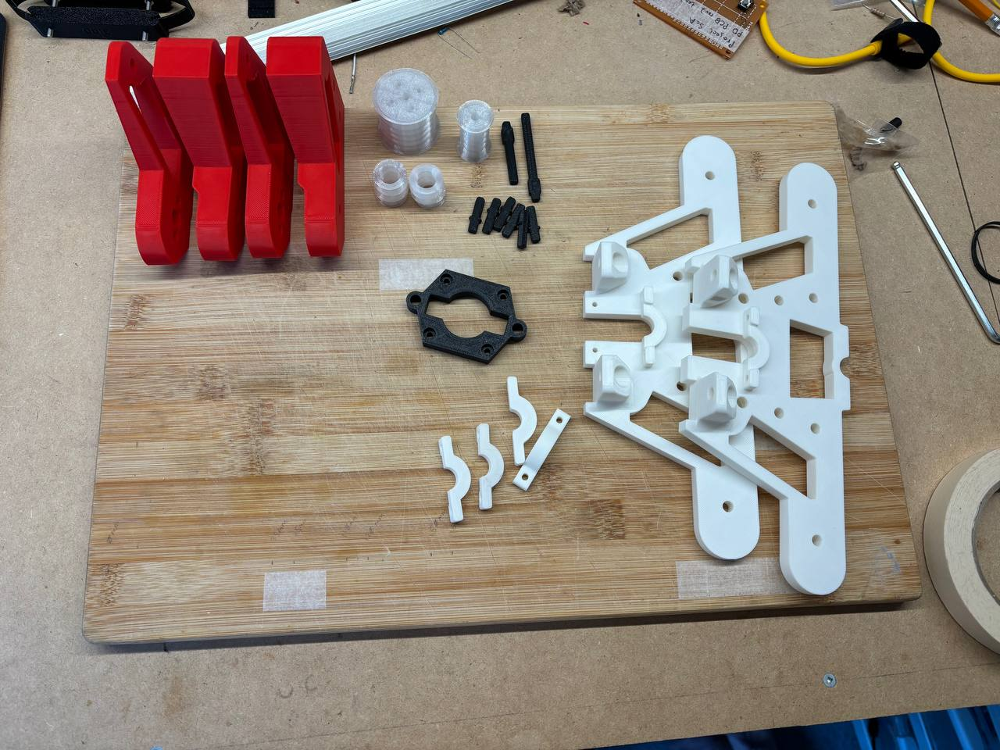
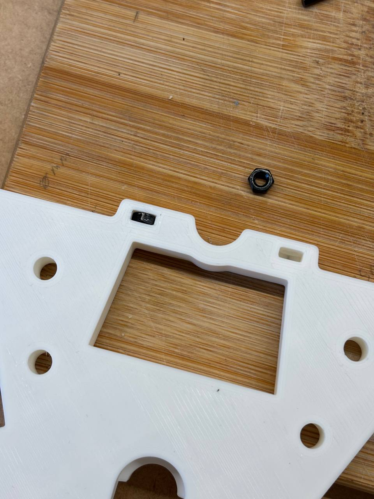
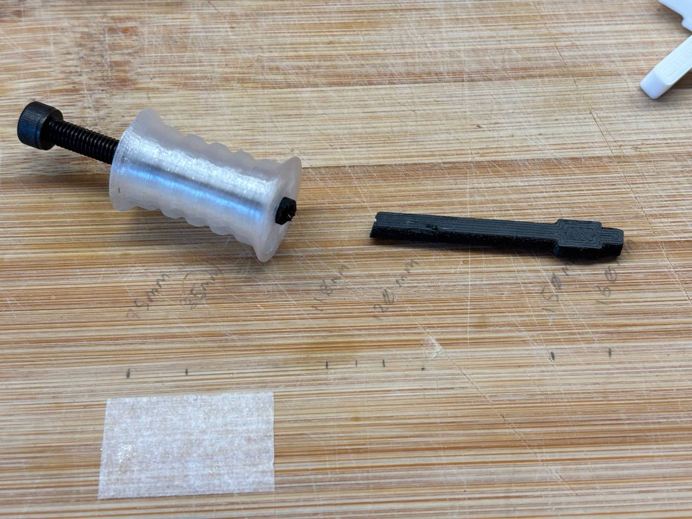
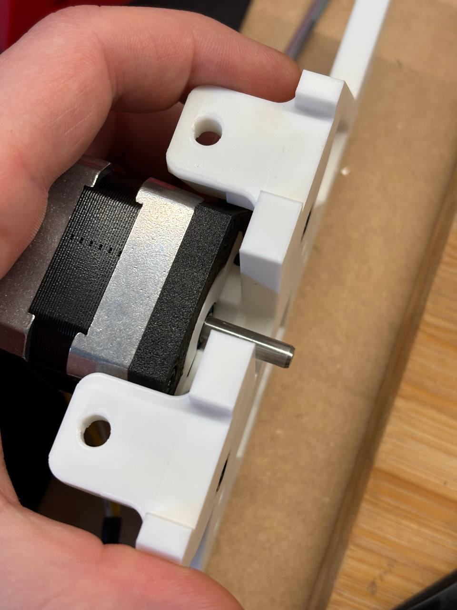
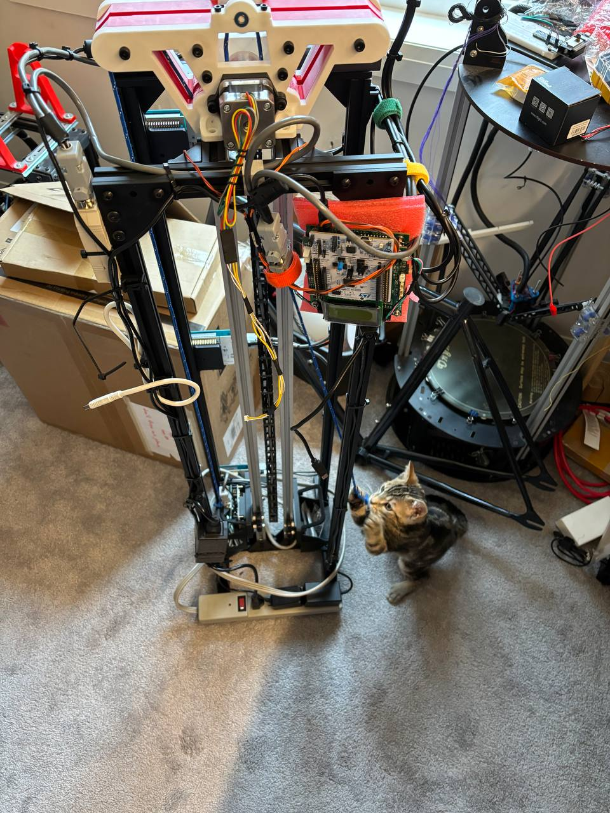

Fixed merge conflict in symbols library for symbols that Nick added to the project library. GitHub fails
to resolve this type of merge, it tries to chop up the symbol entry and splice 2 symbols together rather
than putting 1 symbol after another. I ended up manually copying Nick's version of the library into
my file then deleting duplicate symbols. Example merge conflict:
Fixed some symbols and footprints which weren't added to the project library. Added 3D models to all
new footprints.
Formatted schematics to look coherent with the rest. Added jumpers and 0-ohm resistors for selectively
enabling parts of the board.
Added debounce circuit using Schmitt trigger ICs. Selected RC values based on an article from TI: the TI
application report SCEA094 – Debounce a Switch[1] (October 2020).
Assembling the new pulley system
Yesterday I received the last batch of parts from Nick for the new pulley assembly.

LiF - Pulley Mount Assembly rev 2 printed parts
During assembly I found several issues.

LiF - Pulley Mount rev 2 tight nut clearance
Nuts which are inserted into pulley mount plates have a really tight fit, and special care is required to
insert them at the right angle. Otherwise the nuts get stuck.

LiF - Pulley Mount rev 2 PETG issues
Due to material properties of PETG and moisture content in the filament, the PETG pulley shafts have a
really tight fit with the pulley wheels. PETG pulley shafts were scrapped as the result.
Erroneously-printed PLA shafts were used. They still needed to be filed down. Future revisions of the
assembly will need to use higher tolerances for this interface.

LiF - Pulley Mount rev 2 tool access issue
The motor plate that mounts the stepper to the pulley plate blocks access to tighten bottom bearing
mount. Tight fit between bearing hole and motor shaft prevents the motor from being installed after the
bearing is mounted. Furthermore, the motor mount blocks any fasteners from being used with the bottom
bearing bracket.

LiF - Pulley Assembly rev 2 installation with LAB assistat
My roommate's lab assistant helped me install the new pulley mount assembly by providing tension to
the rope.
Finally, the new pulley mount assembly was installed. However, testing showed that the pulley failed to
guide the rope, which results in rope sliding side-to-side and getting caught on itself, which locks the
mechanism. By driving the rope manually, I found that there is a lot of friction in the system, which
may also be problematic for the stepper motor.
Manual testing of the new pulley mount assembly
Finally, the top PLA pulley shaft broke during testing. This part either needs to be reprinted from PETG,
or the entire assembly needs to be redesigned.